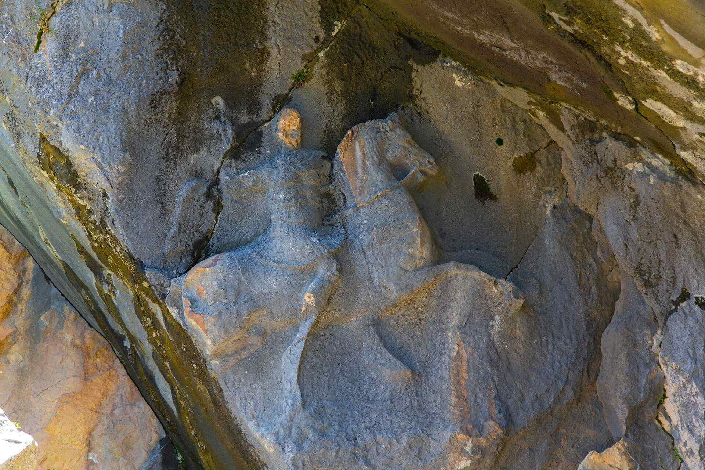
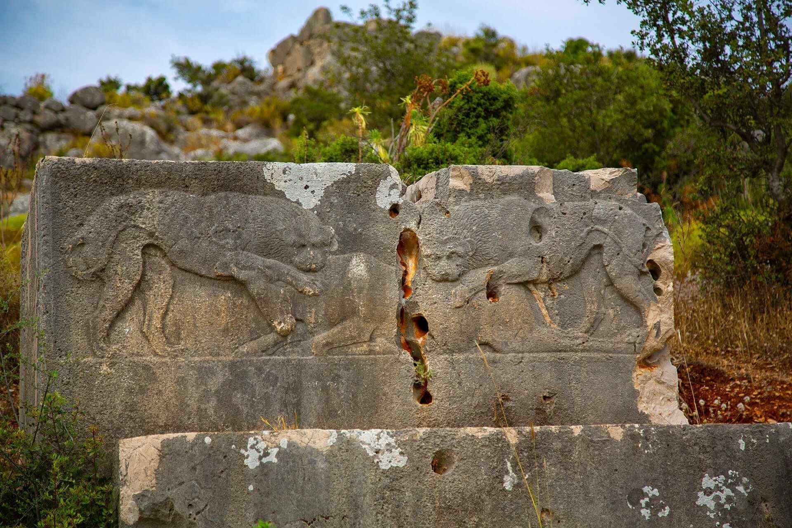

|  |
Termessos Ören Yeri
Termessos, Pisidya Bölgesi’nin "Milyas" olarak anılan güneybatı bölümünde, bugün "Güllük" adını taşıyan Solymos Dağı'nın dorukları arasındaki vadide konumlanmış önemli bir kenttir. Kent, Anadolu'nun en eski halklarından Luviler’in soyundan gelme Solymler tarafından kurulmuştur. Orman içinde korunan ören yerlerinin en güzellerden olan kent, aynı adı taşıyan Milli Park içinde yer alır. Güllük Dağı (Termessos) Milli Parkı, bitki örtüsü zenginliğiyle ve içlerinde soyu tükenmekte olan hayvanların da bulunduğu pek çok hayvanı barındırmasıyla benzersizdir.
|
|  |
Xanthos Ören Yeri
Demre Müze Müdürlüğüne bağlı ören yerlerinden bir olan Ksanthos antik kenti, Likya Uygarlığının özgünlüğü ve kazılarda elde edilen buluntuların önemi nedeniyle UNESCO tarafından Dünya Kültür Mirası Listesine dâhil edilmiştir. Kaş İlçesi, Kınık Beldesinde yer alan ören yeri ovaya hâkim iki tepe üzerinde kurulmuştur. Likya Birliğinin idari merkezi olarak nitelenen Ksanthos kentinin ismine ilk olarak Likya dilinde yazılmış kitabelerde ARNNA olarak anılır.
|